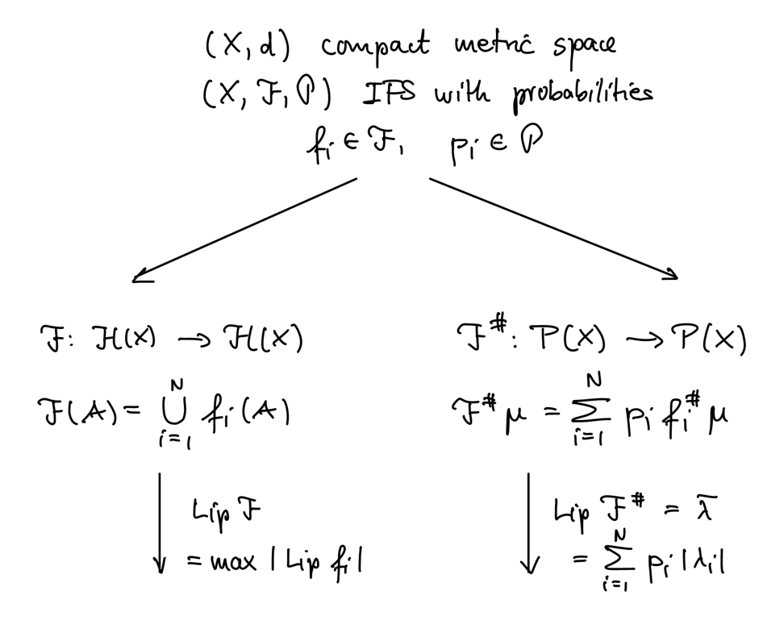
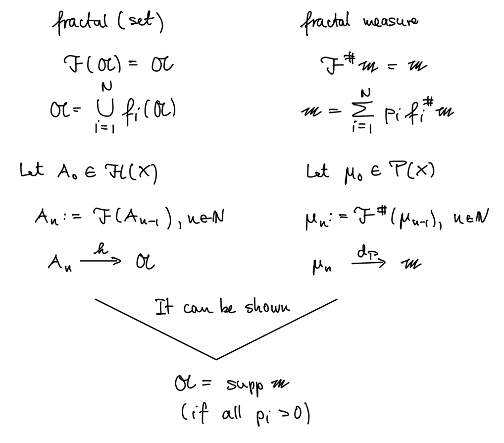

5 IFS with Probabilities
\(\begin{align*} \text{Let } & (X, d) \text{ be a complete metric space} \\ & B(X) \text{ be it's Borel } \s\text{-algebra} \\ & (X, B(X)) \text{ be a measurable space} \\ & (X, B(X), \mu) \text{ be a (Borel) measure space.} \end{align*}\)
Definition
The support of a measure is given by
where \(\mathcal{N}_x\) is the set of all open neighborhoods of \(x\).
It is known that for a continuous function \(f: X \to X\) on a Borel measure space, there exists a unique measure \(\nu\) given by
Definition
Invariant Borel measure
Given the context as above, and with \(f : X \to X\) continuous, we say that the Borel measure \(\mu\) is invariant under \(f\) if
on \(B(X)\).
Definition
IFS with Probabilities
An IFS with probabilities is an IFS \((X, \F)\) together with a set of probabilities \(\mathcal{P} = \{p_1, \dots, p_N\}\), where each \(p_i\) is assigned to \(f_i \in \F\),
Theorem
\(\begin{align*} \text{Let } & (X, d) \text{ be a compact metric space} \\ & P(X) \text{ be the space of all Borel probability measures} \end{align*}\)
Define \(d_P: P(X) \times P(X) \to \R\) by
Then, \(d_P\) is a metric on \(P(X)\) and \((P(X), d_P)\) is a compact metric space (weak* topology).
Lemma
\(\begin{align*} \text{Let } & (X, d) \text{ be a compact metric space} \\ & g : X \to X \text{ be contractive, } |\Lip g| < 1 \\ \end{align*}\)
Define \(g^\# : P(X) \to P(X)\) by
Then, \(g^\#\) is a contraction on \((P(X), d_P)\) with \(\lambda = \Lip g\).
Proof
As \(\Lip f \le 1\), we have for all \(x, y \in X\),
Let \(\mu, \nu \in P(X)\)
Example
\(\begin{align*} \text{Let } & X = [0, 1] \\ & g(x) = \frac{1}{2} x + \frac{1}{3} \end{align*}\)
Then, \(g^\#\) is contractive and the unique fixed point of \(g^\#\) is the dirichlet measure \(\delta_\frac{2}{3}\) centered at \(\frac{2}{3}\).
Theorem
\(\begin{align*} \text{Let } & (X, d) \text{ be a compact metric space} \\ & (X, \F, \mathcal{P}) \text{ be an IFS with probabilities} \end{align*}\)
Define \(\F^\# : P(X) \to P(X)\) by
Then, \(\F^\#\) is a contraction on \((P(X), d_P)\) with \(\overline{\lambda} = \sum_{i=1}^{N} p_i |\lambda_i|\).
Proof
Definition
Fractal measure / ℱ#-invariant measure
Let \(\m \in P(X)\) be a fixed point of \(\F^\#\):
\(\m\) is also called a P-balanced measure of \((X, \F, \mathcal{P})\).
It can be shown that \(\A = \operatorname{supp} \m\):


Chaos Game
\(\begin{align*} \text{Let } & (X, d) \text{ be a compact metric space} \\ & (X, \F, \mathcal{P}) \text{ be an IFS with probabilities} \\ & \m \text{ be a P-balanced measure} \\ & x_0 \in X \\ & x_k = f_i(x_{k-1}) \text{ with } f_i \in \F \text{ chosen with probability } p_i \end{align*}\)
Then, for almost all(1) random sequences \(\{x_k\}\) and \(A \in B(X)\) with \(\m(\partial A) = 0\), we have
Remark
(1) With respect to the measure on the code spce \((\Sigma_N, d_F, \nu)\)(2). (2) Consider the cylinder set \(Z(\sigma_1, \dots, \sigma_k):=\{\omega \in \Sigma_N \mid \omega(k) = \s(k)\}\) and define the measeure \(\nu(Z(\sigma_1, \dots, \sigma_k)) = \prod_{j=1}^{k} p_{\sigma_j}\)
Remark
Define
- \((\Sigma_N, \{s_i\}, \{p_i\})\) is an IFS with probabilities
- If \(\mathfrak p\) is a P-balanced measure of the above IFS, then there exists a relation between \(\mathfrak p\) and \(\m\).
Hausdoorff Dimension of a Measure
Definition
\(\begin{align*} \text{Let } & \mu \text{ be a Borel (probability) measure} \\ & A := \operatorname{supp} \mu \subseteq \R^n \text{ be a bounded set} \end{align*}\)
The Hausdorff dimension of \(\mu\) is given by
Theorem
Collage Theorem for Measures
\(\begin{align*} \text{Let } & (X, d) \text{ be a compact metric space} \\ & (X, \F, \mathcal{P}) \text{ be an IFS with probabilities} \\ & S := \max |\Lip f_i| \\ & \m \text{ be the P-balanced measure of } (X, \F, \mathcal{P}) \end{align*}\)